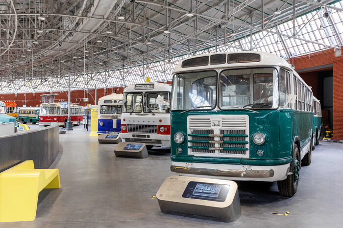
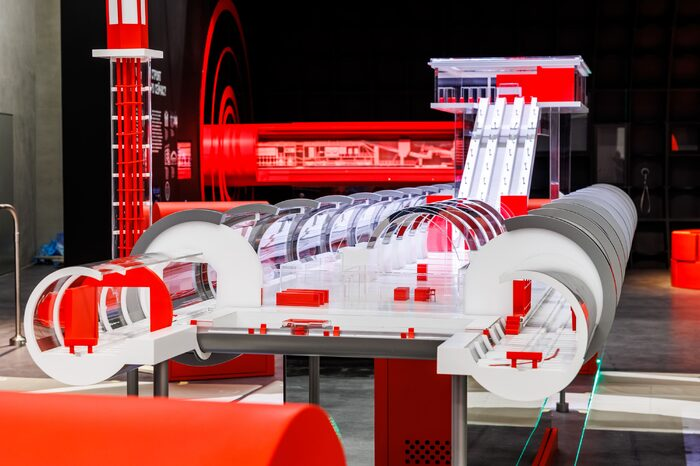

Постоянная экспозиция
Прошлое, настоящее и будущее городского транспорта: от конки и первых автобусов до беспилотных технологий и современных вагонов метро.
Постоянная экспозиция рассказывает 150-летнюю историю Москвы через транспорт и показывает, как он менял город, архитектуру, промышленность, жизнь и привычки москвичей.
Видеообзор музея
Если хотите сначала увидеть музей своими глазами — посмотрите видеообзор. Он покажет, как выглядит экспозиция, что стоит увидеть в первую очередь и как устроено пространство.
🎬 Видеообзор постоянной экспозиции
1 этаж: Наземный транспорт
Первый этаж — это путешествие длиной в 150 лет. Здесь всё построено как хронологическая лента: вы идёте от конки 1872 года к беспилотникам, и на каждом шаге эпоха меняется — меняются вывески, освещение, звуки, даже запахи.
Как устроен этаж: шесть тематических разделов соединены «порталами» — переходами между эпохами. Портал — это не просто арка, а мультимедийный коридор, где на стены проецируются кадры кинохроники, плакаты и фотографии. Благодаря им переход из одной эпохи в другую ощущается как путешествие во времени.
Оформление и детали
🎨 Цвет и свет
Каждый раздел окрашен в свой цвет — от тёплого песочного у конки до холодного синего у беспилотников. Свет тоже меняется: где-то это тусклые газовые фонари, где-то — холодные светодиодные линии.
📜 Вывески и надписи
На стенах — подлинные вывески, таблички, номера маршрутов, объявления. Часть из них — оригиналы, часть — воссозданные по архивным фото.
🔊 Звук
В залах звучит фоновая аудиодорожка: звонки трамваев, шум улиц, голоса диспетчеров. Это создаёт эффект присутствия и помогает перенестись в эпоху.
🏗️ Архитектура залов
Здание гаража Мельникова — само по себе экспонат. Наклонные витражи кровли, кирпичная кладка, скошенные фронтоны — всё это часть экспозиции, и её видно с любого ракурса.
🚶 Маршрут
Экспозиция построена как единый маршрут — вы не можете случайно «перескочить» через эпоху. Каждый раздел перетекает в следующий, как кадры кинохроники.
🔍 Мелкие детали
Обратите внимание на мелочи: билеты, жетоны, форменные пуговицы, инструменты, старые схемы маршрутов. Именно они делают историю живой.
Разделы экспозиции
Точка отсчёта
Пролог о фундаментальных основах транспорта. Три интерактивные инсталляции.
От извозчика до трамвая
Вторая половина XIX века. Центральные экспонаты: вагон конки 1872 года, трамвайный вагон БФ, макет Daimler Omnibus 1 T.
Портал «Транспорт революции»
Переход из Москвы дореволюционной в Москву советскую глазами её жителей.
Машины для города. 1920–1930-е
Первые гаражи, эпоха первой пятилетки, история ЗИС. Центральные экспонаты: ЗИС-8 и макет ЯТБ-3.
Портал «Технологии трудного времени»
Транспорт в годы Великой Отечественной войны. Центральный экспонат — ГАЗ-АА «полуторка».
Город для людей. 1950–1960-е
Послевоенные преобразования, автомобили личного пользования, советская школа дизайна.
Режим ожидания. 1970–1980-е
Транспортная система определяла жизнь новых периферийных районов.
Портал «Московские дороги эпохи перемен»
Перемены 1990-х. Главный символ — маршрутная ГАЗ-32213 «ГАЗель».
Сегодня — послезавтра
Умная инфраструктура, автономные системы, R1, MatrЁshka, беспилотный автомобиль «Яндекса».
Полный список экспонатов 1 этажа (46 единиц наземного транспорта)
Трамваи и конка
| № | Модель | Подробнее |
|---|---|---|
| 35 | Конка 1872 года | Подробнее → |
| 932 | БФ 1927 года | Подробнее → |
| б/н | Russia One(R1) | Подробнее → |
| 1075 | МТВ-82 | Подробнее → |
| 3130 | Двухосный моторный СВАРЗ | Подробнее → |
| 5993 | Tatra T3SU | Подробнее → |
| 932 | «БесФонарный» | Подробнее → |
| 0020 | «Фонарный» | - |
Автобусы, троллейбусы, микроавтобусы
| Модель | Подробнее |
|---|---|
| ЗИС-154 | Подробнее → |
| ЗИС-8 | Подробнее → |
| ЗИС-155 | Подробнее → |
| ЗИЛ-158 | Подробнее → |
| ЛиАЗ-677 | Подробнее → |
| ЛАЗ-695 «Львов» | Подробнее → |
| Ikarus 55 | Подробнее → |
| Ikarus 180 | Подробнее → |
| Ikarus 280 | Подробнее → |
| ПАЗ-652Б | Подробнее → |
| Daimler Omnibus 1 T | Подробнее → |
| ЯТБ-3 | Подробнее → |
| ТБЭС-ВСХВ | Единственный уцелевший из серии для ВСХВ |
| ГАЗ-32213 «ГАЗель» | Подробнее → |
| РАФ-976 | Подробнее → |
Грузовые и специальные
| Модель | Особенность |
|---|---|
| ГАЗ-АА «полуторка» | Легендарный грузовик, всё ещё на ходу |
Современные и беспилотные
| Модель | Подробнее |
|---|---|
| MatrЁshka 2016 | Подробнее → |
| Беспилотный автомобиль «Яндекса» | Подробнее → |
−1 этаж: Метро
Подземный уровень — отдельная вселенная. Сюда метровагоны спускали через монтажный проём длиной более 22 метров, и это само по себе инженерное чудо. Экспозиция построена как «формула метро»: семь разделов, которые вместе объясняют, как метро устроено, как оно строилось и как работает каждый день.
Как устроен этаж: семь разделов идут по кругу, и каждый раскрывает одну грань метро — от проходческого щита до голоса диспетчера. В центре — макет станции, вокруг которого и строится весь маршрут.
Оформление и детали
🛠️ Макет проходческого щита
Главный аттракцион этажа — макет проходческого щита в разрезе. Можно рассмотреть, как устроена машина: рабочий орган с резцами, механизмы для установки тюбингов, платформы.
🎧 Голос метрополитена
Инсталляция «Голос метрополитена» — можно услышать, как объявления звучали в разные годы. От первых записей до современных.
📐 Макет станции
В центре зала — детальный макет станции метро. Можно рассмотреть, как устроены платформы, пути, эскалаторы, вентиляция.
🎨 Архитектура подземки
Отдельный раздел — про архитектуру станций: макеты, чертежи, фотографии. От первой очереди до БКЛ.
🎛️ Симулятор диспетчера
Можно посидеть за пультом диспетчера ЕДЦ и понять, сколько решений принимается каждую минуту.
🚇 Подвижной состав
Вагоны метро Москвы выстроены в хронологическом порядке. Это редкая возможность увидеть их все в одном месте.
Разделы экспозиции
Метрострой
От личных историй первых метростроевцев до современных технологий. Шестиметровый макет проходческого щита с видеомэппингом.
Устройство станции
Станции как сложнейший технологический комплекс. Макет станции.
Системы управления
Симулятор диспетчера — сколько решений принимают специалисты каждую минуту.
Архитектура
Макеты, чертежи, фотографии — от станций первой очереди до БКЛ.
Планирование и развитие
От первых идей до современной схемы. Объёмная инсталляция.
Подвижной состав
Вагоны метро Москвы в хронологическом порядке.
Навигация
Инсталляция «Голос метрополитена».
Полный список экспонатов −1 этажа (7 единиц)
| № | Модель | Узнать больше |
|---|---|---|
| 158 | В-4 | Подробнее → |
| 661 | Г | Подробнее → |
| 5946 | Еж3 | Подробнее → |
| 8535 | 81-717 (ЛВЗ) | Подробнее → |
| 0021 | 81-720 «Яуза» | Подробнее → |
| 65000 | 81-765.4 «Москва-2019» | Подробнее → |
| АГМу-13137 | АГМу (автодрезина) | Подробнее → |
Единственные в мире
Четыре экспоната постоянной экспозиции сохранились в единственном экземпляре.
Конка 1872 года
Единственный аутентичный вагон московской конно-железной дороги. Его ходовая часть почти весь XX век проработала в составе трамвайной вышки для ремонта контактной сети; в 1999 году основание отреставрировали и построили на нём деревянный кузов с империалом.
Метровагон типа В (1927)
Единственный сохранившийся вагон восьмидверной модификации. Списан в 1968 году, но не утилизирован: до 2021 года служил подсобным помещением в депо «Красная Пресня». Под поздней обшивкой реставраторы нашли оригинальную отделку салона и артефакты, включая схему берлинского метро.
Трамвайный вагон БФ (1927)
Один из двух сохранившихся в мире и единственный в отреставрированном экспозиционном состоянии.
Троллейбус ТБЭС
Единственный уцелевший из серии машин, построенных специально для ВСХВ.
Интерактив и мультимедиа
94 интерактивные инсталляции
Можно занять место машиниста метро или диспетчера ЕДЦ, повести трамвай по Москве будущего, прокатиться по городу XX века в автобусе «Лейланд», собрать двигатель «Москвича-412» или подать инструмент мастеру дорожных работ.
27 симуляторов
От кабины машиниста метро до пульта диспетчера.
946 единиц медиаконтента
Более 220 макетов, включая тактильные.
Мультимедиа-гид
Устройство с экраном и наушниками само определяет, где вы находитесь, и включает нужную аудиоисторию. Доступны четыре маршрута:
«Куда едет Москва»
История города через транспорт и городские ландшафты.
«Ретро-футуро-иммерсивная прогулка»
Самые необычные и масштабные объекты.
«Чувство дороги»
О жизни транспорта глазами тех, кто его создавал.
«Как всё устроено»
Техническое устройство транспорта и инфраструктуры.
Детям
По всей экспозиции проложен отдельный детский маршрут с «остановками» — интерактивными точками с заданиями. Рядом работает детский центр «Автолаборатория» и инженерная школа «Фаза» — мастер-классы для детей от 7 до 14 лет.
Доступная среда
Пандусы и лифты, эргономичная мебель. Для незрячих — аудиомаршрут, этикетки шрифтом Брайля. Специально изготовлено 77 тактильных макетов.
Здание — тоже экспонат
Постоянная экспозиция разместилась в гараже для грузовых машин, который Константин Мельников спроектировал в 1926 году, — это первый в стране специализированный грузовой гараж и объект культурного наследия. Треугольный участок задал зданию узнаваемую форму подковы. За сто лет здесь сменились таксомоторный парк, Авторемонтный завод № 5 военных лет и 4-й автобусный парк.
В ходе реставрации зданию вернули исторический облик: скошенные фронтоны, кирпичную кладку, световой фонарь и ленточные наклонные витражи кровли. Подземный уровень спроектировали специально под экспозицию о метро — метровагоны опускали через монтажный проём длиной более 22 метров.
Здание гаража — объект культурного наследия регионального значения и один из самых известных памятников советского конструктивизма.
Фотогалерея

Раздел «Город для людей. 1950–1960-е».

Макет станции метро.

Вагон в экспозиции музея.
Нажмите на фото для увеличения
Правила посещения
Простые правила, которые делают визит приятным и безопасным для всех.
🚫 Не наступайте
Залезать на экспонаты опасно как для вас, так и для самой техники.
🚫 Не залезайте под вагон
Под исторической техникой скрываются сложнейшие механизмы. Лучший ракурс для фото — сверху и со стороны!
🚫 Не трогайте
Технику, которую нельзя трогать, мы пометили специальными стикерами.
⚠️ Осторожно под ногами
Простая внимательность убережёт вас от случайных падений.
Музейный маршрут «Т»
Музейный маршрут «Т» — единственный троллейбусный маршрут в Москве. Он связывает Комсомольскую площадь и Новорязанскую улицу.
🕐 Длительность
60 минут
👥 Вместимость
до 25 человек
🚶 Активность
1000 шагов
Место встречи
Остановка «Станция метро „Комсомольская“» — прошлое и настоящее исторического транспортного эпицентра.
Елоховская площадь
Разговоры о культурной жизни московского троллейбуса с видом на Елоховский собор.
2-й троллейбусный парк
Пешее продолжение поездки и знакомство с островком истории столичного «рогатого» транспорта.
Гараж Мельникова
Архитектурный шедевр советского авангарда: новая жизнь бывшего гаража и будущего дома музея.
«Музей Транспорта Москвы — место, где транспорт становится инструментом осмысления истории города, его жителей и будущего развития».